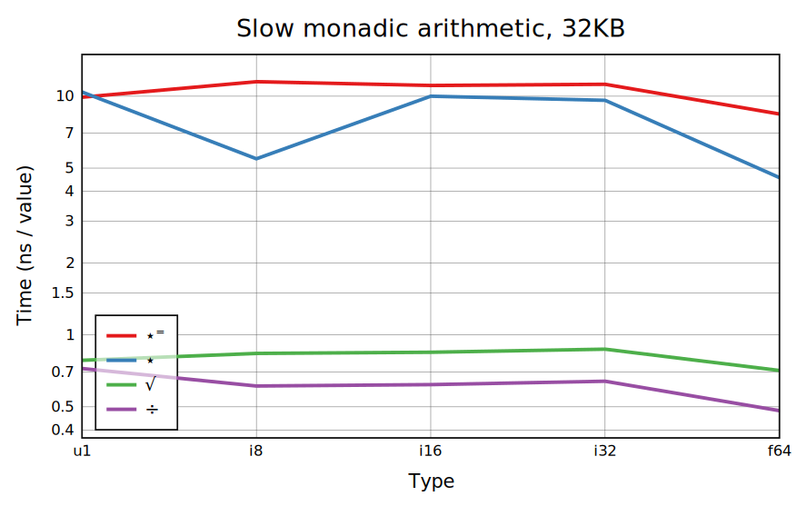
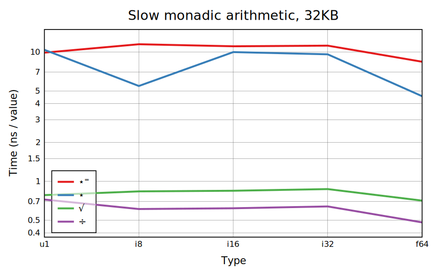

The arithmetic functions +-×⌈⌊, comparisons, and floating-point division, are standard SIMD functionality. With +-× an overflow check is needed, and if it happens a result in a larger type needs to be created. Dyadic | has some optimization for integers but is only really fast when 𕨠is an atom.
Most other primitives, including ÷√⋆ and ⋆⁼, require conversion to floats, so will ideally run at the same speed for all types. Libraries to compute others using SIMD exist but CBQN doesn't use anything like this yet.
Mostly the same as the dyadic case. There's a SIMD √ instruction. Primitives - and | can overflow for an integer argument containing the smallest value of that type, or boolean 1 for -. This slows them down for i16 and smaller cases; i32 isn't likely to include the minimum value.
Arithmetic Table works like a bunch of scalar-list operations, with the list repeated. For long right arguments this is straightforward; for shorter ones the constant overhead of setting up scalar-list arithmetic as well as the efficiency loss for uneven lengths become expensive. So Table switches to list-list arithmetic, expanding 𕨠with a constant Replicate k/𝕨, to keep the overhead from going too high.
Leading-axis arithmetic is a series of scalar-list operations like Table, the difference being that it has a new list at each step. So the performance is pretty similar; not having to reshape 𝕩 speeds it up for smaller widths but the extra memory traffic slows it down for larger ones.
This case does list-list operations but with one fixed list. For small widths it just has to repeat the lower-rank argument, which is less intrusive than constant Replicate. However, list-list arithmetic is slower than scalar-list.
 
